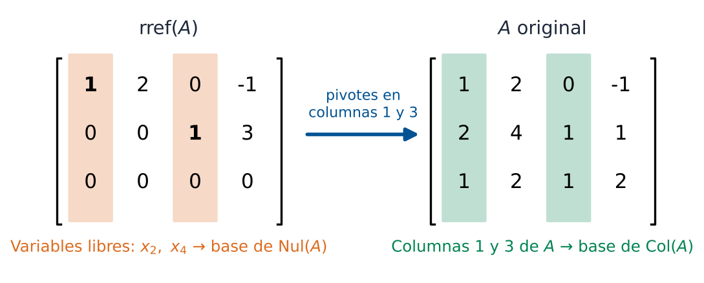
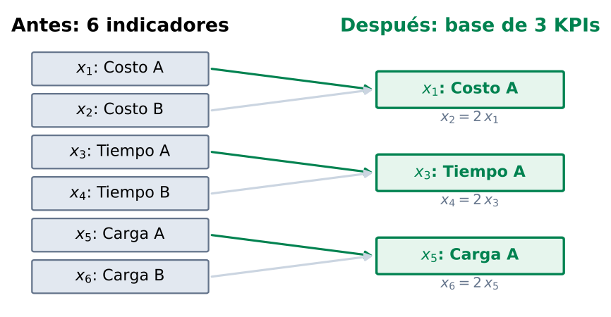

Base y Dimensión
Aplicación a Reducción de Variables Logísticas
Matemáticas 2 — Módulo 4, Clase 19
Cátedra de Matemáticas 2
Ingeniería en Logística
Clase 19
Contenidos de la Clase
- Objetivos de Aprendizaje
- Motivación: El Problema de la Redundancia
- Definición de Base
- Dimensión de un Espacio Vectorial
- Base vs Conjunto Generador
- Cómo Encontrar una Base: Método rref
- Ejemplo Completo Paso a Paso
- Aplicación: Simplificar una Red Logística
- Coordenadas respecto a una Base
- MATLAB: Encontrar Bases
- Ejercicios Prácticos
- Resumen y Tarea
Objetivos de Aprendizaje
Al finalizar esta clase el estudiante será capaz de:
- Definir base y dimensión de un espacio vectorial.
- Encontrar una base del espacio nulo y del espacio columna usando
rref.
- Eliminar variables redundantes en un sistema logístico manteniendo la información esencial.
- Aplicar
rref, null y rank en MATLAB para encontrar bases.
- Decidir cómo simplificar una operación logística sin perder control.
Conexión con Clase 18
Clase 18: subespacios — dónde viven los vectores.
Clase 19: base y dimensión — cuántos vectores describen ese espacio de forma mínima.
Motivación: El Problema de la Redundancia
Situación real
Una empresa de logística tiene 8 variables para describir su operación: distancias, tiempos, costos, cargas...
Tras analizar los datos, el analista nota que algunas variables son combinaciones lineales de otras:
- "El costo por km es siempre 2.3 veces el costo de combustible"
- "El tiempo de ruta B es siempre el doble del tiempo de ruta A"
Consecuencia: solo necesita unas pocas variables clave para describir todo el sistema.
Pregunta central
¿Cuántas variables independientes necesita realmente para describir el espacio de operación?
Esa cantidad es la dimensión.
Esas variables son una base.
Definición de Base
Definición
Un conjunto \(\mathcal{B} = \{\mathbf{b}_1, \mathbf{b}_2, \ldots, \mathbf{b}_p\}\) es una
base del subespacio \(H\) si:
- B1: \(\mathcal{B}\) es linealmente independiente.
- B2: \(\mathcal{B}\) genera \(H\): \(H = \text{Gen}\{\mathbf{b}_1,\ldots,\mathbf{b}_p\}\)
Base de \(\mathbb{R}^2\)
\[ \mathcal{B} = \left\{ \begin{pmatrix}1\\0\end{pmatrix}, \begin{pmatrix}0\\1\end{pmatrix} \right\} \]
B1: independientes ✓
B2: generan todo \(\mathbb{R}^2\) ✓
Esta es la base canónica.
Otra base de \(\mathbb{R}^2\)
\[ \mathcal{B}' = \left\{ \begin{pmatrix}1\\1\end{pmatrix}, \begin{pmatrix}1\\-1\end{pmatrix} \right\} \]
B1: independientes ✓
B2: generan todo \(\mathbb{R}^2\) ✓
Hay infinitas bases posibles.
Propiedad clave
Todas las bases de un mismo espacio tienen el mismo número de vectores.
Ese número es la dimensión.
Dimensión de un Espacio Vectorial
Definición
La dimensión de un subespacio \(H\), denotada \(\dim(H)\), es el número de vectores en cualquier base de \(H\).
Convención: \(\dim(\{\mathbf{0}\}) = 0\).
| Subespacio | Dimensión | Ejemplo en \(\mathbb{R}^3\) | Geometría |
|---|
| \(\{\mathbf{0}\}\) | 0 | solo el origen | punto |
| Recta por origen | 1 | \(\text{Gen}\{(1,0,0)^T\}\) | línea |
| Plano por origen | 2 | \(\{x_3=0\}\) | plano |
| Todo \(\mathbb{R}^3\) | 3 | base canónica | espacio |
Conexión con el rango
Para una matriz \(A \in \mathbb{R}^{m\times n}\):
\[ \dim(\text{Col}(A)) = \text{rango}(A) = r \qquad \dim(\text{Nul}(A)) = n - r \]
Base vs Conjunto Generador: Diferencia Clave
Conjunto generador (puede tener redundancias):
\[ S = \left\{ \begin{pmatrix}1\\2\end{pmatrix}, \begin{pmatrix}2\\4\end{pmatrix}, \begin{pmatrix}0\\1\end{pmatrix} \right\} \]
El segundo vector = \(2\times\) primero:
es redundante.
\(S\) genera \(\mathbb{R}^2\) pero no es base.
Base (mínima, sin redundancias):
\[ \mathcal{B} = \left\{ \begin{pmatrix}1\\2\end{pmatrix}, \begin{pmatrix}0\\1\end{pmatrix} \right\} \]
Independientes y generan \(\mathbb{R}^2\).
Esta sí es una base.
Quitar el vector redundante no cambia el espacio generado.
Interpretación logística
En logística: eliminar rutas redundantes del modelo no reduce la capacidad descriptiva, pero simplifica el análisis y la gestión.
Cómo Encontrar una Base: Método rref
Algoritmo para encontrar la base de Col(A) y Nul(A):
- Paso 1. Calcular \(\text{rref}(A)\).
- Paso 2. Identificar las columnas pivote (con pivote = 1 líder).
- Paso 3.
- Base de Col(A): columnas pivote de la matriz original \(A\).
- Base de Nul(A): vectores solución del sistema \(A\mathbf{x}=\mathbf{0}\), uno por cada variable libre.
Atención importante
La base de \(\text{Col}(A)\) se toma de las columnas originales de \(A\), no de las columnas de \(\text{rref}(A)\).
(rref cambia el espacio columna, no el espacio nulo.)
Ejemplo Completo Paso a Paso
Encontrar bases de Col(A) y Nul(A) para:
\[ A = \begin{pmatrix} 1 & 2 & 0 & -1 \\ 2 & 4 & 1 & 1 \\ 1 & 2 & 1 & 2 \end{pmatrix} \]
Paso 1 — rref(A):
\[ \text{rref}(A) = \begin{pmatrix} 1 & 2 & 0 & -1 \\ 0 & 0 & 1 & 3 \\ 0 & 0 & 0 & 0 \end{pmatrix} \]
Columnas pivote: 1 y 3 (posiciones con pivote).
Variables libres: \(x_2\) y \(x_4\).
Paso 2 — Base de Col(A): columnas 1 y 3 de \(A\) original:
\[ \text{Base de Col}(A) = \left\{ \begin{pmatrix}1\\2\\1\end{pmatrix},\; \begin{pmatrix}0\\1\\1\end{pmatrix} \right\} \quad \Rightarrow \dim(\text{Col}(A)) = 2 = \text{rango}(A) \]
Ejemplo: Base de Nul(A) (continuación)
Retomando \(\text{rref}(A)\) con variables libres \(x_2 = s\) y \(x_4 = t\):
\[ \text{rref}(A) = \begin{pmatrix} 1 & 2 & 0 & -1 \\ 0 & 0 & 1 & 3 \\ 0 & 0 & 0 & 0 \end{pmatrix} \]
De las ecuaciones:
\[ x_1 + 2x_2 - x_4 = 0 \;\Rightarrow\; x_1 = -2s + t \qquad x_3 + 3x_4 = 0 \;\Rightarrow\; x_3 = -3t \]
\[ \mathbf{x} = s\underbrace{\begin{pmatrix}-2\\1\\0\\0\end{pmatrix}}_{\mathbf{v}_1} + t\underbrace{\begin{pmatrix}1\\0\\-3\\1\end{pmatrix}}_{\mathbf{v}_2} \quad\Rightarrow\quad \text{Base de Nul}(A) = \{\mathbf{v}_1,\;\mathbf{v}_2\} \]
Verificación del Teorema Rango-Nulidad
\[ \underbrace{\dim(\text{Col}(A))}_{2} + \underbrace{\dim(\text{Nul}(A))}_{2} = \underbrace{n}_{4} \quad\checkmark \]
Bases y Pivotes: resumen visual

Las columnas pivote se identifican en rref(A), pero la base de Col(A) se toma de la matriz original A
Resumen visual
Las columnas con pivote (en rref) \(\to\) base de Col(A) (en \(A\) original).
Las variables libres \(\to\) vectores de la base de Nul(A).
Aplicación: Simplificar una Red Logística
Problema
una empresa monitorea 6 indicadores operativos:
- \(x_1\): costo de ruta A
- \(x_2\): costo de ruta B
- \(x_3\): tiempo ruta A
- \(x_4\): tiempo ruta B
- \(x_5\): carga ruta A
- \(x_6\): carga ruta B
Pero detecta que algunos son redundantes.
Matriz de datos históricos \(D \in \mathbb{R}^{4\times6}\):
\[ D = \begin{pmatrix} 2 & 4 & 1 & 2 & 3 & 6 \\ 1 & 2 & 3 & 6 & 2 & 4 \\ 3 & 6 & 2 & 4 & 1 & 2 \\ 1 & 2 & 1 & 2 & 1 & 2 \end{pmatrix} \]
¿Cuántos indicadores son realmente independientes?
\[ \text{rango}(D) = ? \]
Reducción: Cálculo con rref
\[ D = \begin{pmatrix} 2 & 4 & 1 & 2 & 3 & 6 \\ 1 & 2 & 3 & 6 & 2 & 4 \\ 3 & 6 & 2 & 4 & 1 & 2 \\ 1 & 2 & 1 & 2 & 1 & 2 \end{pmatrix} \]
\[ \text{rref}(D) = \begin{pmatrix} 1 & 2 & 0 & 0 & 0 & 0 \\ 0 & 0 & 1 & 2 & 0 & 0 \\ 0 & 0 & 0 & 0 & 1 & 2 \\ 0 & 0 & 0 & 0 & 0 & 0 \end{pmatrix} \]
Columnas pivote: 1, 3, 5 \(\Rightarrow\) rango = 3
Interpretación
Solo
3 de los 6 indicadores son independientes:
- \(x_1\) (costo ruta A), \(x_3\) (tiempo ruta A), \(x_5\) (carga ruta A)
- Los indicadores de ruta B son siempre el doble de los de ruta A
La empresa puede gestionar con
3 KPIs en vez de 6.
Reducción: Interpretación Geométrica
Antes: 6 indicadores (dim 6) → Después: 3 indicadores clave (dim 3)
rango(D) = 3: los indicadores de la ruta B son el doble de los de la ruta A
Ventajas de la reducción
- Menos datos a recolectar
- Modelos más simples y rápidos
- Reducción de costos de monitoreo
- Mayor claridad en decisión
Riesgo
Si se eliminan variables incorrectamente, se pierde información real.
La base garantiza que no se pierde información esencial.
Coordenadas respecto a una Base
Definición
Si \(\mathcal{B} = \{\mathbf{b}_1,\ldots,\mathbf{b}_p\}\) es base de \(H\) y \(\mathbf{x} = c_1\mathbf{b}_1 + \cdots + c_p\mathbf{b}_p\), entonces \((c_1,\ldots,c_p)\) son las coordenadas de \(\mathbf{x}\) respecto a \(\mathcal{B}\).
Ejemplo: base \(\mathcal{B} = \{(1,0)^T, (1,1)^T\}\) en \(\mathbb{R}^2\). Para \(\mathbf{x} = (3,2)^T\):
\[ \begin{pmatrix}3\\2\end{pmatrix} = c_1\begin{pmatrix}1\\0\end{pmatrix} + c_2\begin{pmatrix}1\\1\end{pmatrix} \;\Rightarrow\; c_2 = 2,\; c_1 = 1 \]
Coordenadas: \([\mathbf{x}]_\mathcal{B} = (1,2)\).
Aplicación logística
Si la base son los 3 KPIs independientes de ruta A, las coordenadas de cualquier plan de operación son los valores de esos 3 KPIs.
Los otros 3 indicadores se calculan automáticamente como el doble.
MATLAB: Base de Col(A) con rref
% Matriz de indicadores logisticos
D = [2 4 1 2 3 6;
1 2 3 6 2 4;
3 6 2 4 1 2;
1 2 1 2 1 2];
% Forma escalonada reducida
[R, pivots] = rref(D)
% pivots da los indices de columnas pivote
fprintf('Columnas pivote: ')
disp(pivots)
% Base de Col(D): columnas pivote de D original
base_Col = D(:, pivots)
% Dimension del espacio columna
r = rank(D);
fprintf('Rango = dim(Col) = %d\n', r)
fprintf('De 6 indicadores, solo %d son independientes\n', r)
Resultado esperado
pivots = [1, 3, 5]rango = 3- Base de Col(D): columnas 1, 3 y 5 de \(D\)
Nota MATLAB
rref(D) con dos salidas devuelve también el vector de índices de columnas pivote — muy útil para identificar variables clave.
MATLAB: Base de Nul(A) y Verificación
% Matriz de ejemplo
A = [1 2 0 -1;
2 4 1 1;
1 2 1 2];
% Base de Nul(A) en forma racional (fracciones)
[R, pivots] = rref(A);
n = size(A,2);
free_vars = setdiff(1:n, pivots);
fprintf('Variables pivote: '); disp(pivots)
fprintf('Variables libres: '); disp(free_vars)
% Base de Nul(A) numerica (ortonormal)
N = null(A)
fprintf('dim(Nul(A)) = nulidad = %d\n', size(N,2))
% Verificacion Teorema Rango-Nulidad
r = rank(A);
nulidad = size(null(A),2);
fprintf('rango + nulidad = %d + %d = %d = n = %d\n', r, nulidad, r+nulidad, n)
% Verificar que los vectores de N satisfacen Ax=0
fprintf('Verificacion A*N (debe ser ~0):\n')
disp(norm(A*N))
Salida esperada
Variables pivote: 1 3 | Variables libres: 2 4
rango + nulidad = 2 + 2 = 4 = n = 4
MATLAB: Reducción de KPIs Logísticos
Salida esperada: KPIs clave 1, 3, 5 (Costo A, Tiempo A, Carga A); coordenadas del nuevo plan: [6.0, 3.0, 9.0].
% Datos historicos: 4 observaciones, 6 indicadores
D = [2 4 1 2 3 6;
1 2 3 6 2 4;
3 6 2 4 1 2;
1 2 1 2 1 2];
nombres = {'Costo A','Costo B','Tiempo A','Tiempo B','Carga A','Carga B'};
% Identificar indicadores independientes
[R, pivots] = rref(D);
r = rank(D);
fprintf('=== ANALISIS DE REDUNDANCIA DE KPIs ===\n')
fprintf('Total de indicadores: %d\n', size(D,2))
fprintf('Indicadores independientes (rango): %d\n', r)
fprintf('\nIndicadores CLAVE (base):\n')
for i = 1:length(pivots)
fprintf(' KPI %d: %s\n', pivots(i), nombres{pivots(i)})
end
fprintf('\nIndicadores REDUNDANTES:\n')
redundantes = setdiff(1:size(D,2), pivots);
for i = 1:length(redundantes)
fprintf(' KPI %d: %s\n', redundantes(i), nombres{redundantes(i)})
end
% Proyectar nuevos datos sobre base reducida
nuevo_plan = [6; 12; 3; 6; 9; 18];
coords_reducidas = nuevo_plan(pivots); % valores de los 3 KPIs clave
fprintf('\nCoords en base reducida: [%.1f, %.1f, %.1f]\n', coords_reducidas)
% Verificar: los KPIs redundantes son el doble de los clave
disp(isequal(nuevo_plan(redundantes), 2*coords_reducidas)) % 1 = verdadero
Ejercicio 1: Encontrar una Base
Dada la matriz \(A\), encontrar una base para Col(A) y Nul(A):
\[ A = \begin{pmatrix} 1 & 3 & 4 \\ 2 & 6 & 8 \\ 0 & 1 & 1 \end{pmatrix} \]
rref(A):
\[ \begin{pmatrix} 1 & 0 & 1 \\ 0 & 1 & 1 \\ 0 & 0 & 0 \end{pmatrix} \]
Columnas pivote: 1 y 2. Variable libre: \(x_3 = t\).
\[ \text{Base de Col}(A) = \left\{ \begin{pmatrix}1\\2\\0\end{pmatrix},\; \begin{pmatrix}3\\6\\1\end{pmatrix} \right\} \qquad \text{Base de Nul}(A) = \left\{ \begin{pmatrix}-1\\-1\\1\end{pmatrix} \right\} \]
Verificación
\(\dim(\text{Col}(A)) + \dim(\text{Nul}(A)) = 2 + 1 = 3 = n\) ✓
\(A \cdot (-1,-1,1)^T = (0,0,0)^T\) ✓
Ejercicio 2: Caso Logístico
Una red logística tiene 5 rutas y 3 nodos de balance. La matriz de incidencia es:
\[ B = \begin{pmatrix} 1 & 0 & -1 & 1 & 0 \\ 0 & 1 & 1 & 0 & 1 \\ -1 & -1 & 0 & -1 & -1 \end{pmatrix} \]
Preguntas:
- ¿Cuántas rutas son independientes (rango de \(B\))?
- ¿Cuántos grados de libertad hay en los flujos (nulidad)?
- ¿Qué rutas forman una base para Col(\(B\))?
Respuestas (calcular con MATLAB en la práctica):
- Rango = 2 (una fila es combinación de las otras dos)
- Nulidad = \(5 - 2 = 3\) (tres grados de libertad de flujo)
- Base de Col(\(B\)): columnas 1 y 2 (verificar con
rref)
Conclusión práctica
Con 5 rutas hay 3 flujos libres (se pueden ajustar según la demanda del día) y los otros 2 quedan determinados por las ecuaciones de balance.
Ejercicio 3: ¿Son base?
Determina si cada conjunto es base de \(\mathbb{R}^3\):
(a)
\[ \mathcal{B}_1 = \left\{ \begin{pmatrix}1\\0\\0\end{pmatrix}, \begin{pmatrix}0\\1\\0\end{pmatrix}, \begin{pmatrix}0\\0\\1\end{pmatrix} \right\} \]
(b)
\[ \mathcal{B}_2 = \left\{ \begin{pmatrix}1\\0\\0\end{pmatrix}, \begin{pmatrix}1\\1\\0\end{pmatrix}, \begin{pmatrix}1\\1\\1\end{pmatrix}, \begin{pmatrix}0\\1\\0\end{pmatrix} \right\} \]
(a) Sí, es base.
Base canónica de \(\mathbb{R}^3\). Independientes y generan \(\mathbb{R}^3\). ✓
(b) No es base.
Tiene 4 vectores en \(\mathbb{R}^3\). Toda base de \(\mathbb{R}^3\) tiene exactamente 3 vectores. (4 vectores en \(\mathbb{R}^3\) son dependientes.) ✗
Regla práctica
Una base de \(\mathbb{R}^n\) tiene exactamente \(n\) vectores.
Ni uno más (sería dependiente), ni uno menos (no genera).
Mapa Conceptual de la Clase
Ideas clave
- Base = mínimo conjunto generador
- Dimensión = número de vectores en la base
- rref \(\to\) columnas pivote \(\to\) base de Col(\(A\))
- Variables libres \(\to\) base de Nul(\(A\))
Conexión logística
Rango = KPIs independientes.
Nulidad = grados de libertad operativos.
Reducir = simplificar sin perder control.
Punto de Decisión
Pregunta de Cierre
Tu sistema logístico tiene 8 rutas pero el rango de la matriz de datos es 3. Eso significa que solo 3 rutas son realmente independientes.
¿Eliminarías las otras 5 rutas del modelo operativo, o las mantendrías? Justifica considerando eficiencia y riesgo operativo.
Argumento a favor de reducir
Menos variables = modelo más rápido, más fácil de gestionar y de comunicar a la gerencia.
Argumento en contra
Las rutas "redundantes" pueden ser críticas ante fallas: redundancia operativa.
Balance óptimo
Reducir el modelo matemático, no necesariamente la infraestructura real.
Tarea para la Clase 20
Lecturas
- Lay, Cap. 4.5: Base y dimensión (revisar ejemplos 3 y 4)
- Lay, Cap. 4.3: Bases y coordenadas linealmente independientes
Ejercicio preparatorio
Para la siguiente matriz de red logística:
\[ C = \begin{pmatrix} 1 & 2 & 3 & 4 \\ 2 & 4 & 6 & 8 \\ 1 & 0 & 1 & 0 \end{pmatrix} \]
- Calcular
rref(C) y encontrar columnas pivote.
- Escribir la base de Col(\(C\)) y la base de Nul(\(C\)).
- Verificar el Teorema Rango-Nulidad en MATLAB.
- ¿Cuántos KPIs independientes tiene esta red?
Próxima clase 20
Mini-caso 3: Reducción de variables logísticas (caso integrador con MATLAB)
Referencias
- Lay, D.C., Lay, S.R., McDonald, J.J. (2016). Álgebra Lineal y sus Aplicaciones (5a ed.). Pearson. Capítulo 4.5 (Base y Dimensión), pp. 253–268.
- Lay (2016). Cap. 4.3: Subespacios del espacio de columnas y del espacio nulo.
- Poole, D. (2015). Álgebra Lineal: Una introducción moderna (4a ed.). Cengage Learning. Capítulo 6.2.
- MATLAB Documentation.
rref, null, rank, orth. https://www.mathworks.com/help/matlab/
- Material propio: Guía de base y dimensión, Dataset KPIs, Script
clase19_base_dimension.m
Matemáticas 2 — Clase 19 | Base y Dimensión
¡Hasta la próxima clase!
Clase 20: Mini-caso 3 — Reducción de Variables Logísticas
contacto@mat2logistica.edu